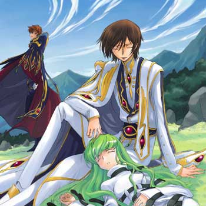
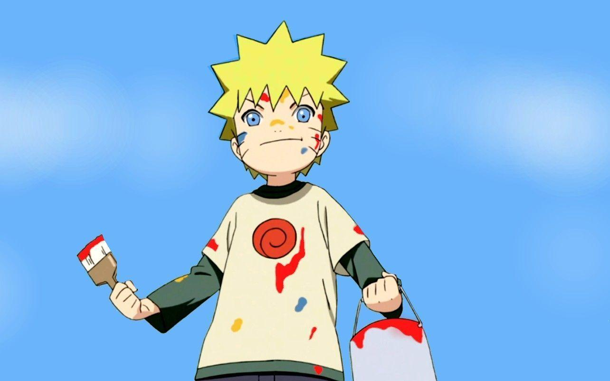

Anime Masterpieces
Certified OtakuWhen I step away from model training and algorithmic complexity, these legendary series fuel my passion and imagination:


Ghost Companion
The little ghost is roaming this page too — watch it zip around leaving a trail of purple stardust.
Small Talk & Trivia
Dev MusingsData vs. Intuition?
Always data — but a great model still needs domain intuition to ask the right question in the first place. The best DS lives at that intersection.
Debugging Rituals
Staring at loss curves at 2AM while listening to legendary anime battle OSTs to find that one rogue NaN silently poisoning the whole pipeline.
Ultimate Goal
Building intelligent systems that illuminate hidden patterns in data — like moonlight revealing a landscape that daylight never shows.
Epic Soundtracks
Focus MusicThe perfect background music for intense coding sessions and neural network training:
Hiroyuki Sawano Mix
When the code has bugs and the deadline is approaching, only epic drop beats can save the day.
Lo-Fi Anime Beats
For deep focus and feature engineering. Smooth, repetitive, and keeps the brain waves steady.
Nier Automata OST
Technically a game, but the orchestrated melancholic tones are perfect for debugging complex systems.
Battle Station
Gear & SetupThe command center where algorithms are born and anime is consumed at 2x speed:
Dual Monitor Setup
One vertical monitor for code and reading documentation, one ultrawide for data visualization... and Discord.
Mechanical Keyboard
Custom switches with an excessive amount of RGB. Because every line of code should sound like a typewriter.
Endless Coffee
The true fuel of any developer. My mug collection is slowly expanding to take over the entire desk.
Anime Lessons for Data Science
Lore Meets LogicA few series actually map suspiciously well to how I think about projects, experiments, and staying disciplined.
Code Geass = Strategy First
Before training anything expensive, define the win condition, the fallback, and the next move after the next move.
Fullmetal = Equivalent Exchange
Good outputs require good inputs. Clean data, careful assumptions, and reproducible experiments are the real alchemy.
Naruto = Consistency Wins
Big breakthroughs usually come after a lot of boring repetition, stubborn iteration, and refusing to quit too early.
Otaku Moodboard
Favorite VibesThe genres, themes, and tiny details that instantly make me lock in for "just one episode" and accidentally watch five.
Favorite atmosphere
That cinematic feeling where everything looks calm for one second and then the plot decides to explode.
Favorite trope
The quiet genius character who looks unbothered but has already simulated fifteen possible outcomes.
Watchlist Modes
Binge LogicDifferent moods call for different anime energy. This is basically the recommendation engine running in my head.
After a heavy coding session
I want clean action, fast pacing, and a soundtrack that makes closing laptop tabs feel heroic.
Late-night calm mode
Something reflective, slightly melancholic, and visually rich enough to slow the whole brain down.
Group watch energy
Maximum reactions, iconic scenes, impossible cliffhangers, and at least one moment where everyone shouts at the screen.
Power Level Scanner
Over 9000?A totally scientific measurement of how anime culture affects productivity, emotions, and unreasonable optimism.